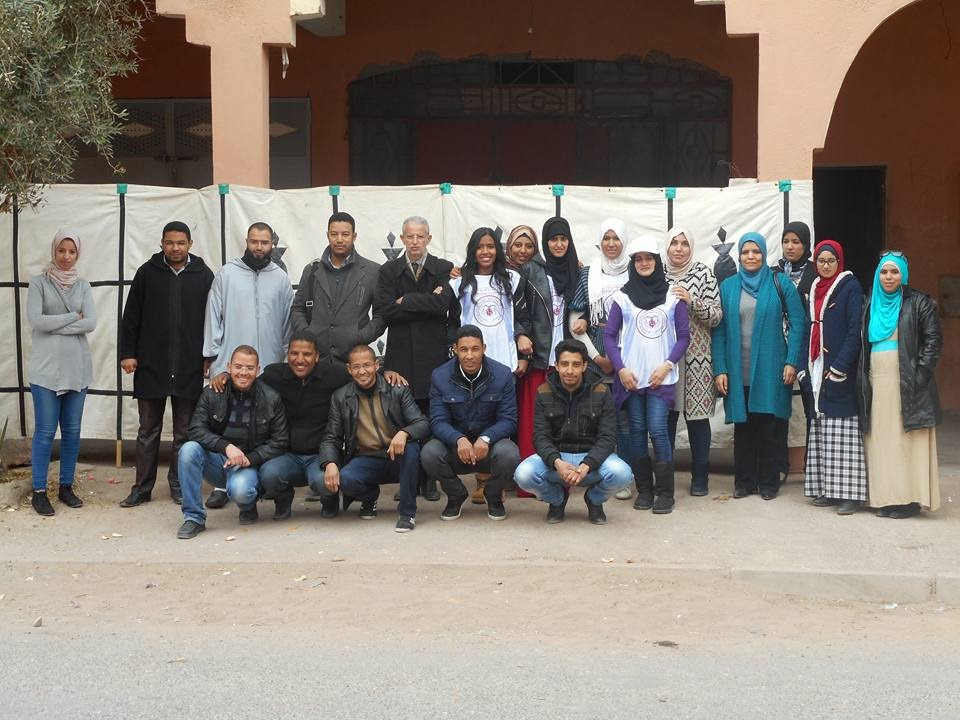

Who we are
- Home
- Who we are

Word of the president
As president of the hearts of mercy Association for Orphans and Widows, I'm honored to lead our efforts in supporting those in need. Together, we're committed to providing vital assistance and fostering a community of compassion and empowerment. With your support, we can make a real difference in the lives of widows and orphans.
About us
The Hearts of Mercy Association for Orphans and Widows was established in September 2013 by a group of young people in the city of Ouarzazate who set their sights on assisting widows and orphans. The association was launched with a specific vision to become a leading model and reference for widows and orphans in need of all forms of support, as well as for supporting donors and volunteers interested in charitable work. The mission of the association is to extend a helping hand to assist widows and orphans in various aspects of life. Through a range of programs and initiatives, the association aims to provide emotional, financial, and social support to those who have lost loved ones, helping them navigate through the challenges they face and rebuild their lives with dignity and resilience. By fostering a culture of compassion and solidarity within the community, the association seeks to create a network of support that uplifts and empowers widows and orphans, enabling them to thrive and contribute positively to society.
